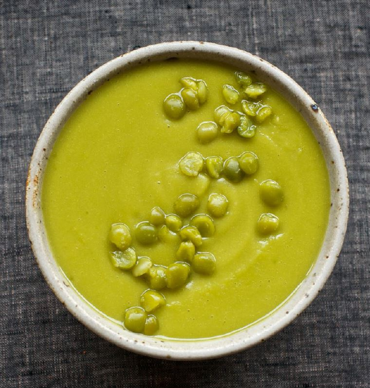

Split Pea Soup

Description
This soup is a great winter-warmer.
The recipe is simple to make and is rich in proteins and fibres.
Ingredients
- 360g split peas
- 2 onions
- basil
- oil
- salt
- pepper
- chicken stock (1 cube)
- water
Steps
- Dice the onions and cook them in a pot with some oil and some salt.
- Rinse the split peas.
- Once the onions are cooked, add the split peas and the chicken stock cube.
- Cover with a large amount of water.
- Bring to the boil then cook for about 30 minutes until the split peas are tender.
- Strain and keep the cooking water.
- Add some basil and whizz into desired consistency,
adding back some cooking water if necessary.